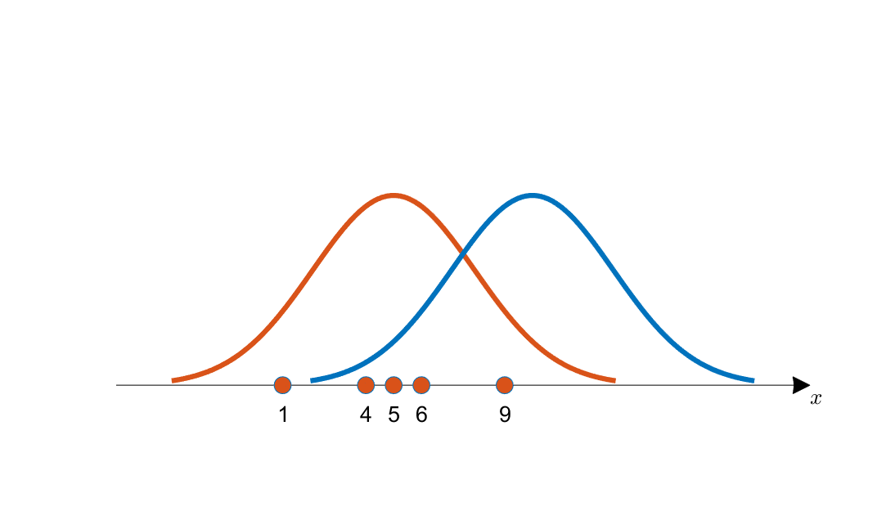

Table of Contents
Machine Learning을 시작한 지는 오래되었는데, 자주 나오던 likelihood 개념은 통 익숙하지 않았던 것 같다. 지금 와서 “아하” 하고 있으니 부끄러운 마음도 든다. 한번 이렇게 이해하고 지나가기보다는 부족하더라도 글로 남겨보고자 한다. 내용 자체는 “공돌이의 수학정리노트 - 최대우도법(MLE)”의 내용을 참고했다.
Likelihood의 정의
한국어로는 가능도 혹은 우도라고 불리는 likelihood는 likelihood function이라고도 부른다. 위키피디아의 likelihood function을 보면, likelihood function은 주어진 데이터가 어느 확률 분포와 추출되었는지에 대한 indicate function이라고 이야기한다. 즉, 추출된 데이터는 고정되어있는 상태에서 이 데이터가 어느 확률분포에서 왔는지 계산했을 때, 어느 확률분포에서 왔는지에 대한 유사도가 수치로 나타나는게 likelihood function이라고 이해하면 되겠다.
likelihood function을 수식으로 나타내면 아래와 같다.
Likelihood의 직관
다음과 같이 5개의 데이터를 얻었다고 가정하자.
이때, 아래의 그림을 봤을 때 데이터 는 주황색 확률분포와 파란색 확률분포 중 어떤 곡선으로부터 추출되었을 확률이 더 높을까?

눈으로 보기에도 파란색 확률분포보다는 주황색 확률분포에서 이 데이터들을 얻었을 가능성이 더 커 보인다. 왜냐면 획득한 데이터들의 분포가 주황색 확률분포의 중심에 더 일치하는 것처럼 보이기 때문이다. 이러한 해석은 우리의 직관적인 해석이고, 이를 수학적으로 표기한 것이 likelihood function이라고 보면 된다. 파란색의 확률분포와 주황색의 확률분포에서 데이터 에 대한 likelihood function의 값은 주황색 확률분포가 더 크게 나올 것이다.
Likelihood의 계산
수치적으로 이 가능도를 계산하기 위해서는 각 데이터 샘플에서 후보 분포에 대한 높이(즉, likelihood 기여도)를 계산해서 다 곱한 것을 이용할 수 있다. 계산된 높이를 더해주지 않고 곱해주는 것은 모든 데이터의 추출이 독립적으로 연달아 일어나는 사건이기 때문이다. 그렇게 해서 계산된 가능도를 생각해볼 수 있는 모든 후보군에 대해 계산하고 이것을 비교하면 우리는 지금 얻은 데이터를 가장 잘 설명할 수 있는 확률분포를 얻어낼 수 있게 된다.
이를 수학적으로 표기하면 아래와 같다.
이어지는 토픽
- MLE(Maximum Likelihood Estimation)
- MLE와 뉴럴넷 Loss function의 의미
- Bayesian Theory
Reference